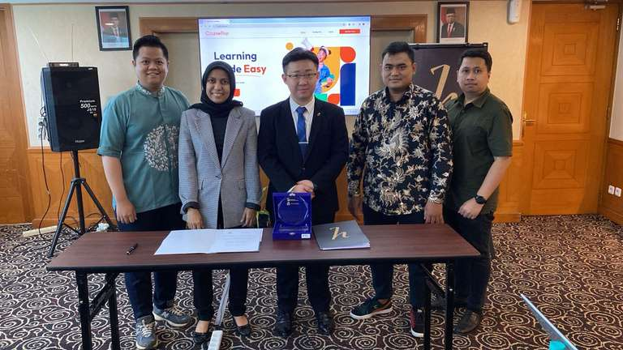

Our ecosystem
Progress begins
with the right connections.
A Malaysia-based network connecting education, people and specialist business expertise.
Our purpose
Bring expertise together.
Make the next step clearer.
We connect education, business solutions and specialist financial services around the needs of people and organisations.
We bring institutions, businesses and specialist providers together around practical needs: learning, workforce planning and business support.
Our role is practical: understand the objective, introduce relevant specialists and help coordinate the path ahead.
How we connect
An ecosystem built around your needs.
Education Ecosystem
Provided by DKT Consultancy & Management: institutional partnerships, programme pathways and international education collaborations.
Explore 02 /Training & project management
Provided by Neuravanta Sdn Bhd: corporate training, CIDB G7 project management and grant facilitation.
Explore 03 /Talent & workforce
Manpower supply by NT-2 Corporation Sdn Bhd and Carbon Ecology; talent discovery by Insaniah Talent Hub Sdn Bhd.
Explore 04 /Business & investment
M&A and matchmaking by Insaniah Talent Hub; accounting and HR by QuickPro Solution; investment and financing services by GS Securities Management Limited.
Explore
Partnerships in practice
A bridge between markets.
DKT coordinates international education partnerships and business consultancy, bringing local context to cross-border conversations.
Connections with Indonesia’s hospitality sector bring education and industry partners together to explore talent pathways between Indonesia and Malaysia.
A clear relationship
Connected expertise. Defined responsibilities.
DKTCM | Associated Business Network connects independent entities. An introduction does not create a shared legal obligation.
Each entity is responsible for its own services, contracts, regulatory obligations and delivery. The appropriate service provider and scope are confirmed before an engagement.
Explore the companies ↗Start a conversation
How can we help?
Tell us what you need. We’ll connect you with the relevant company.